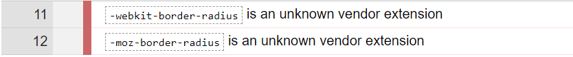

One of my biggest passions in life is riding motorcycles. Over 3 years ago I started off with a Kawasaki Ninja 250R, a small bike to learn on and see if I liked riding. Now my skills are built up and I've moved to a
Honda CBR600RR
This bike is much less forgiving being a 600cc SuperSport with hardened suspension, more agressive riding position, and high-performance brakes.
Inline
One of my biggest passions in life is riding motorcycles. Over 3 years ago I started off with a Kawasaki Ninja 250R, a small bike to learn on and see if I liked riding. Now my skills are built up and I've moved to a
Honda CBR600RR
This bike is much less forgiving being a 600cc SuperSport with hardened suspension, more agressive riding position, and high-performance brakes.
Block
One of my biggest passions in life is riding motorcycles. Over 3 years ago I started off with a Kawasaki Ninja 250R, a small bike to learn on and see if I liked riding. Now my skills are built up and I've moved to a
Honda CBR600RR
This bike is much less forgiving being a 600cc SuperSport with hardened suspension, more agressive riding position, and high-performance brakes.
Inline-Block
One of my biggest passions in life is riding motorcycles. Over 3 years ago I started off with a Kawasaki Ninja 250R, a small bike to learn on and see if I liked riding. Now my skills are built up and I've moved to a
Honda CBR600RR
This bike is much less forgiving being a 600cc SuperSport with hardened suspension, more agressive riding position, and high-performance brakes.
The code tag allows you to represent computer code in text more effectively than using bold or italics.
Relevant Screenshots!
HTML Validation
CSS Validation

DevTools
More Facts!
CSS was invented by Hakon Lie while working with CERN, the world's first website, in collaboration with CERN's creator, Tim Berners-Lee in 1994.
Bootstrap uses 2 systems, a grid system, and a flex system to achieve a very fast a resonsive webpage.